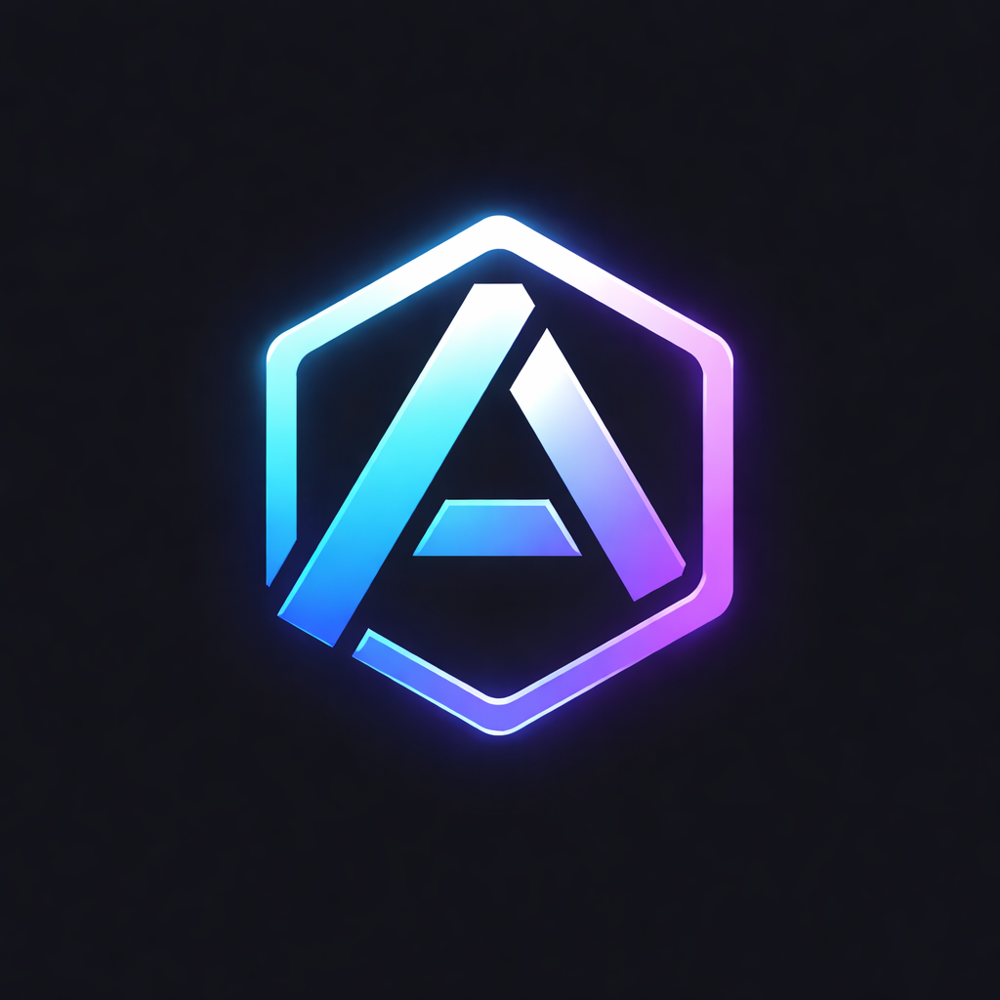

AdequateAPICoroutine-first backend framework focused on deterministic execution, explicit async, and production-grade behavior. No hidden thread pools. No runtime magic.
IO stays on the event loop. CPU work is explicitly offloaded. You control where code runs.
Handlers are awaitable. No callback pyramids. Composition stays readable under load.
Pool + awaitable execution. Transaction scope owned by Services (not “magic inside repos”).
Spec is generated from routes + schema registry and served as static files in /public/openapi.
Goal: run locally via Docker and hit the health endpoint.
https://github.com/Emilianissimo/adequate-api-cpp.git
cd <repo>
make build
make startcurl http://localhost:8080/healthExpected:
{"status":"ok"}These are the core pages you actually need.
If you want a multi-page docs site later, you can keep these sections as-is and split them into separate pages.